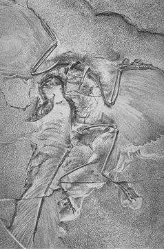
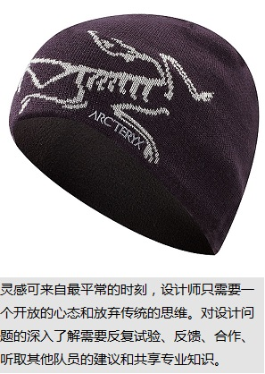
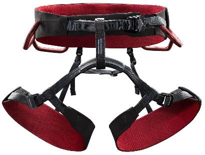

始祖鸟是加拿大的顶级户外品牌，也是公认的顶级奢侈品，有着对新工艺和新技术近乎疯狂的追求。Arc’teryx的名字和商标图案来自于人类所知最早的鸟类生物Archaeopteryx，即始祖鸟，  图案形象基于1880年前后于柏林发现的“HMN1880柏林标本”（Berlinspecimen），迄今最完整的始祖鸟化石。因此Arc’teryx品牌中文一般称作“始祖鸟”，俗称“鸟”，“小鸟”，或“加拿大鸟”， 以区别于另一个使用鸟类图案商标的美国品牌Osprey，美国鸟。
Arc’teryx的前身叫RockSolid，由DaveLane和JeremyGuard创建，最早的产品是攀登装备，使用热压合技术设计和生产的Vapor安全带（Harness),该产品也成为Arc’teryx最流行的产品之一。公司运营的第二年， 伴随公司的扩建，Arc’teryx推出了采用同样Vapor技术的Bora系列背包。1996年Arc’teryx获得了WLGore公司使用Gore-Tex织物的授权，开始生产其崭新的户外技术服装系列。
由于对新技术和新工艺近乎疯狂的追求，以及对产品设计和做工不惜工本的强调，Arc’teryx迅速被公认为最高端的户外品牌之一，同时也带来通常不菲的售价。其服装系列最畅销的产品 包括ThetaSV及GammaMX夹克，Arc’teryx的设计也获得了Backpacker,Outside,Climbing,Men’sJournal,Powder等专业户外杂志的众多奖项。
挑战现状和持续创新是Arc'teryx的文化。激情和好奇驱使我们不断探索，无论假设是什么，我们都不断扩大知识的界限。我们大多数的设计都由需求开始；创造本来不存在的物品；改进原有的夹克或背包；  改进舒适度或更换面料；修改费时而保护不周的多余功能。设计灵感是神圣的，而Arc'teryx 制造产品的主要目的是创造功能性并为各种需求提供一个解决方案。
设计团队有充足的时间找寻灵感，并有机会发现和体验产品的真实特性。我们的现场测试非常独特，设计师不但在现实环境对产品进行亲自测试，也将产品给运动员和行业专业人士进行真实情形的测试。 有时一个想法可能会产生两个产品，也可能生出另一个完全不同的设计。设计是一个过程而不是一次性的事件。有时候，一个设计最好的解决方案可能是与另一个设计结合，也可能是引进一个原来并没有的元素。 有时候，也因为设计根本行不通而只能放弃。灵感可来自最平常的时刻，设计师只需要一个开放的心态和放弃传统的思维。  对设计问题的深入了解需要反复试验、反馈、合作、听取其他队员的建议和共享专业知识。市场和个人喜好并不重要，真正的产品总是可以找到自己声音的。Arc'teryx的设计是对复杂问题精确而简单的回答，那是对最严峻环境和最苛刻性能的最佳答案——渐行渐远,演绎极致。
人体工学设计
Arc'teryx在产品版型设计上经验丰富：我们的服装有一种独特自由感，这不仅是服装有额外的空间，衣服的人体工学设计更使衣服能随身体一起运动。 Arc'teryx服装非常具有实用性。袖子是三维设计而前倾，这使手臂能充分伸展和活动，不会造成对背部、肩膀或腰部的牵拉；膝盖和臂部也同样采用立体拼接剪裁， 能使膝盖全面弯曲而不提起裤脚或牵扯后腰部；帽兜紧贴头部，能和头一起转动，使视线时刻无阻。人体工学设计是Arc'teryx 最重要的设计细节，它的好处可能用肉眼看不到，但却能大大的提高穿着的舒适感。